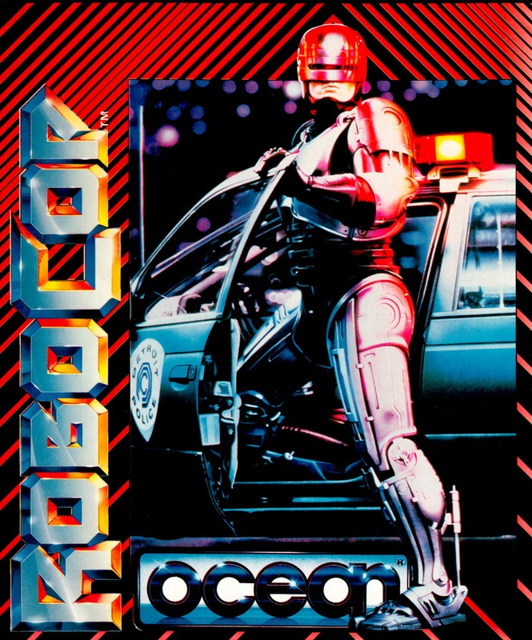
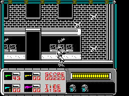
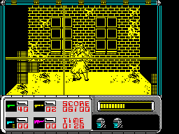
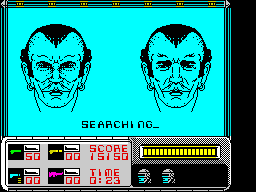

RoboCop


{kind=link}

| Publisher: | Ocean |
| Price: | £8.95 cass 14.95 disk |
| Year: | 1988 |
| Source: | CRASH, Issue 59 |

The future of law enforcement arrives simultaneously on video and Spectrum with some pretty slick effects for both. The film begins with OmniConsumer Products (OCP) backing a big, walker-like droid called ED209 as the ultimate cop. But when a malfunction results in it accidentally machine-gunning someone an alternative project is proposed — a cyborg mix of cop and machine called RoboCop. The first cop to be murdered while on duty is Murphy and OCP rebuild him, Frankenstein fashion.

The computer game is composed of three loads (one for 128K owners) and opens with RoboCop on the beat of a horizontally-scrolling section, shooting snipers looking down on him, kung fu kicking villains and chainsaw psychos. RoboCop starts off with four lives and an energy level, the latter can be replenished by collecting baby food jars. Ammunition is strictly limited as well but there are extra magazines lying around, as well as three special weapons. If all the bullets are exhausted then RoboCop can use his fists, if they fail and he dies he goes back to the start of the section.
While on patrol RoboCop is called to the scene of an assault where a woman is being held hostage. Switching to a first-person perspective you must shoot the criminal without hitting the woman. As on all the sections there’s a time limit and a life is lost if you exceed it. After that it’s back on patrol in a different part of time with bikers coming after you. Here you also encounter Emil, one of Murphy’s murderers, hiding out at a petrol station.

Meeting Emil awakens memories in the cyborg that was once Murphy and RoboCop goes to the police’s photofit library in load two. Eyes, ears, chin, nose and hairstyle must be matched to the picture on the left — not easy in the time limit. Once Emil has been identified information is provided leading RoboCop to a Drugs Factory (Issue 58’s demo tape). Another horizontally scrolling section, this ends with RoboCop learning the leader of the gang which killed him — Clarence Botticker — was employed by an OCP executive. RoboCop heads for the OCP tower and is attacked by ED209. Survive that and load three has you desperately trying to escape the tower in a horizontally/vertically scrolling section. If you do escape then it’s on to the junkyard, where Murphy was killed, for a confrontation with Clarence. Kill him and you must then rescue the president of OCP who’s being held hostage by the executive who employed Clarence.

The first thing that strikes you about RoboCop is the character’s animation which is probably the best ever seen on the Spectrum — it really is that good. Scrolling is perfectly smooth and sound is great, with sampled speech saying ‘RoboCop’. Playability, as far as we’ve got, is great. Going back to the start of sections is frustrating, as is the ammunition limit, but since the enemies always follow the same patterns this forces you to get really good. Other sections, such as the ID stage, are surprisingly effective as well, making this an instant Spectrum classic.
STUART ... 94%
INSTANT JUSTICE
- Learn the positions of the enemies in order to anticipate them.
- Take care with the chainsaw psychos — they often need loads of hits to kill.
- Conserve your ammunition by using the minimum number of shots required to kill each baddie.
- Anticipate the motorbike riders and shoot before they actually appear onscreen.
- On the hostage screen try to anticipate which way the villain will move for a quick, easy shot.
- In the ID section don’t spend too long on one feature, some overlap and until you’ve got a full face it’s easy to get confused.
Crikey, I remember when policemen wore silly helmets, rode bicycles and kept saying ‘Evening all’, but this RoboCop chappie is a bit more like a badge-wearing Charles Bronson! He mercilessly blasts criminals, but even though he’s made of metal he ain’t so great. A hail of enemy bullets soon finishes him off, while turning in a crouch makes him stand up! At the same time, care must be taken not to waste your limited supply of ammunition — if you run out, you’re dead meat (or should that be circuitry?). With all these problems, RoboCop is initially very hard, but as you learn the patterns of the enemies (they appear in the same places every time), you soon work out a strategy for success. And it’s definitely worth persevering to see the detailed backdrops and nicely-animated enemies. Thankfully, RoboCop doesn’t just rely on the usual shoot-’em-up theme; it mixes several varied sections together, each requiring different skills to complete, to make a truly excellent package. Fans of the film and arcade buffs alike, will not be disappointed.
PHIL ... 91%
Without doubt this is one of the closest translations of a movie ever achieved in a computer game, making this unmissable for all RoboCop fans. The extra sections written by Michael Lamb and Dawn Drake to improve the basic coin-op are really good and add a lot to the game. The result is a conversion that’s genuinely superior to the arcade. Ingame music is really good on the 128 with some nice gunshot effects as well. Admittedly progress is tough, until you learn the attack patterns it might seem impossible, but with ED209, the junkyard scene and the OCP tower still to save I can’t stop playing it. One of the best films of 1988 had made one of the best Spectrum games as well, congratulations Ocean.
MARK ... 90%
THE ESSENTIALS
| Joysticks: | Cursor, Kempston, Sinclair |
| Graphics: | Well-animated sprites fight it out on detailed, horizontally-scrolling backgrounds |
| Sound: | A nice bit of sampled speech and some catchy 128K ingame music to complement good shooting effects |
| Options: | Definable keys, music on/off |
| General rating: | A superb implementation of the licence, which successfully captures the spirit of the violent film |
| Presentation: | 88% |
| Graphics: | 90% |
| Sound: | 86% |
| Playability: | 92% |
| Addictive qualities: | 91% |
| Overall: | 92% |